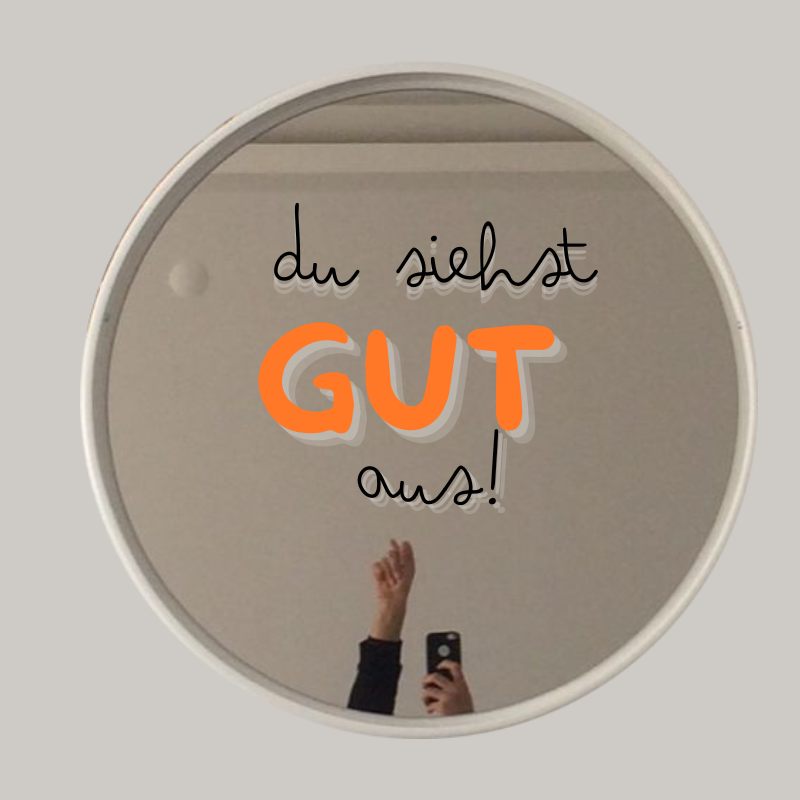

Ehrlichkeit

Wir reden so oft von ihr – dieser allseits bejubelten Tugend:
Ehrlichkeit.
Ein großes Wort, glänzend und klar
wie der Deckel einer Keksdose,
unter dem so oft jedoch nur Krümel kleben.
Ehrlich zu anderen? Ja, das klingt edel,
wie ein im Wind wehender Banner über unserem Kopf.
Doch wann, frage ich dich (und mich),
sind wir eigentlich wirklich ehrlich zu uns selbst?
Ehrlich in all ihrer nackten Wahrheit?
Ohne Feigenblatt, ohne „aber“ und „weil“?
Beginnend bei den guten Eigenschaften,
die wir zu besitzen glauben –
ja, ich schreibe bewusst glauben,
denn oft ist es nur der Verstand, der dort ruft:
„Schau, wie gütig du bist!“
Während die Handlung in der Ecke sitzt und schweigt.
Wenn wir dann erkennen –
Nackenklatsche, das war wohl doch nur ein hübscher Titel
auf einer leeren Seite –
kommt die Frage,
die piekst wie ein Dorn in der heiligen Brusttasche:
Sind wir ehrlich genug, um daran etwas zu ändern und mutig genug zugleich?
Wir kennen sie doch, die goldenen Worte,
die man sich an Kühlschränke klebt, oft mit Staub übersäht:
Sei ein guter Mensch. Sei liebevoll. Sei Licht. Love is Love. Trallala bla bla.
Doch hoppla – da ist er wieder,
der ehrliche Schritt, des wahren „Ichs“,
der uns durch Pfützen tritt
und über Stolpersteine aus Eigensinn Küsschen gibt.
Es ist eine mühsame, fransige Fitzelarbeit –
im Alltag, in den winzigen Momenten,
zu erkennen,
wie „gut“ wir wirklich sind.
Und wie viel davon bloß gut gemeint.
Denn dieser Weg bringt Emotionen hervor,
schwerer als die Konsequenzen unserer Taten es sind.
Scham. Wut. Traurigkeit.
Oder das kleine schüchterne Gefühl:
„Mist, ich dachte, ich wär weiter.“ – das wir eher schweigend ersticken, als mit unserem Sein vereinen.
Und so schließt sich der Kreis –
die Ehrlichkeit uns selbst gegenüber
ist kein gläserner Pokal im Regal,
sie ist der schmutzige Spiegel
im Bad, nach dem Waschen des Gesichts – mit der Wahrheit bespritzt.
So wie jener Satz:
„Wer sich selbst nicht liebt, kann andere nicht wirklich lieben.“
Gilt auch hier:
Nur wer mutig genug ist,
seine eigenen Schatten zu küssen,
kann Ehrlichkeit in ihrer wahren Schönheit schenken und das hoffentlich auf Ewigkeit.
← zurück zu den Gedankensamen